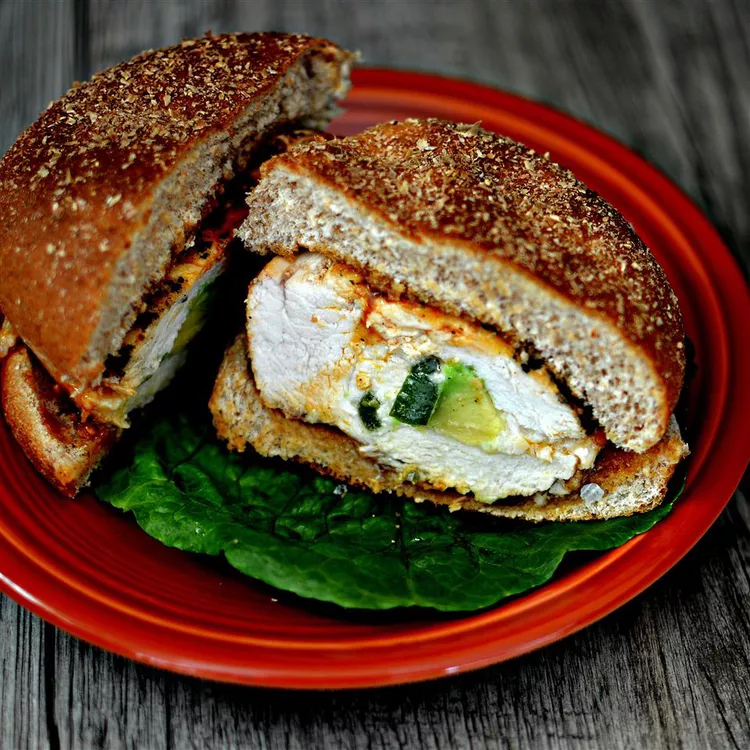

Spicy Grilled Stuffed Chicken Breast Sandwich

The nutrition data for this recipe includes the full amount of the marinade ingredients. The actual amount of
the marinade consumed will vary.
- Ingrediants
- 4 skinless, boneless chicken breast halves
- 8 thin slices Monterey Jack cheese
- 1 avocado - peeled, pitted, and sliced
- 1 jalapeno pepper, seeded and sliced
- ¼ cup olive oil
- ½ lime, juiced
- 1 tablespoon spicy mesquite-flavored seasoning
- 1 pinch sea salt
- 1 cup chipotle barbeque sauce
- 4 Kaiser rolls, split
- Directions
- Step 1: Slice a small pocket into each chicken breast
with a sharp knife. Layer cheese slices, avocado slices, and sliced jalapeno inside the chicken pockets.
Pinch chicken breasts closed and secure with toothpicks or skewers; place chicken into a casserole dish.
- Step 2: Whisk olive oil, lime juice, mesquite seasoning,
and salt together in a bowl; drizzle half of the mixture over chicken breasts. Turn chicken breasts over
and drizzle with remaining olive oil mixture; cover and refrigerate for 30 minutes.
- Step 3: Preheat an outdoor grill for high heat, and
lightly oil the grate.
- Step 4: Place chicken breasts on preheated grill and
cook for 7 minutes; turn chicken over and brush with BBQ sauce on the cooked side. Continue grilling for
about 5 minutes; turn chicken over and apply BBQ sauce to the second cooked side. Cook chicken until no
longer pink in the center and the juices run clear, about 2 minutes more. An instant-read thermometer
inserted into the center should read at least 165 degrees F (74 degrees C).
Go back HOME